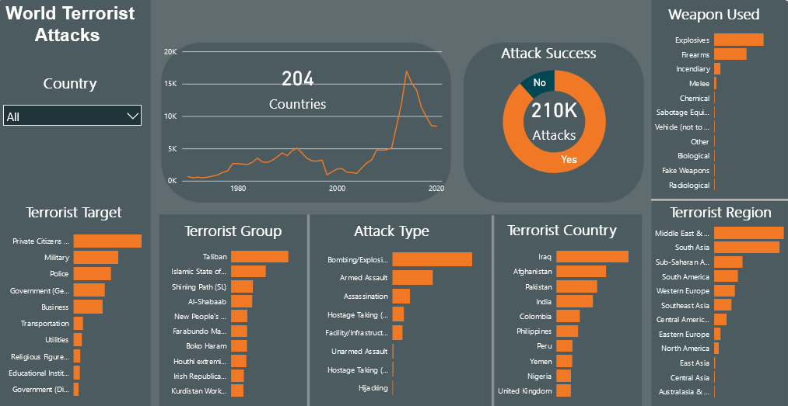
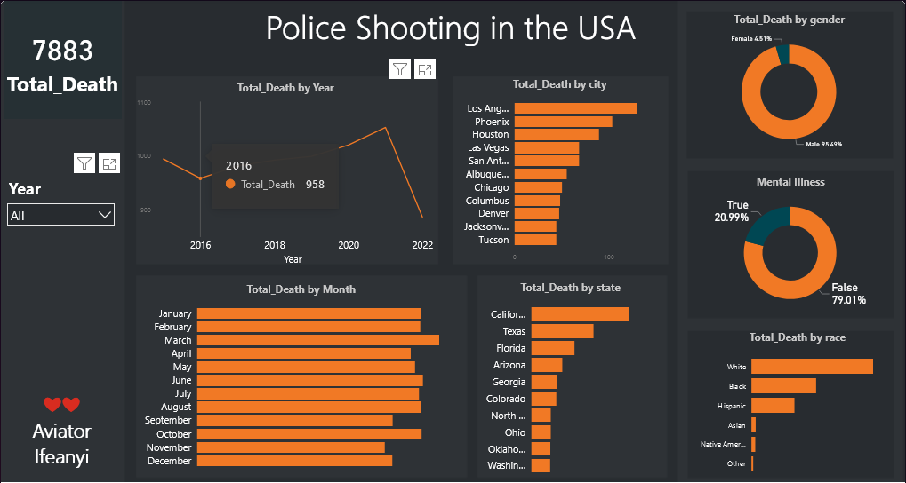

About
Experienced in data extraction, cleaning, preparing and deriving insights
from data for informed decision.
I make use of analytics tools such as Python, dbt, Snowflake, Apache Airflow, Microsoft Excel, Microsoft PowerBI and SQL.
Also make use of cloud technologies such as Microsoft Azure platform.
Open to learning new tools as per work demands.
I love working on tasking and challenging projects, I prioritize team work and I come with lots
of positive energy.
I am also a technical writer

Earthquakes are a common natural disaster that can occur anywhere in the world.
Caused by the movement of tectonic plates in the Earth's crust, which can result in the
release of huge amounts of energy in the form of seismic waves. Earthquakes can range
in intensity from minor tremors that are barely noticeable to major disasters that can
cause widespread destruction and loss of life.
Over the past 70 years, earthquakes have occurred in many different parts of the world, some with more
frequency and intensity than others.
In this analysis, we will look at the occurrence of earthquakes around the world from 1950 to 2022,
including the most significant earthquakes that have occurred during this time period and the regions that
are most at risk for earthquakes.
Tools Used: Python, Matplotlib, Seaborn, Pandas, Jupyter Notebook

This annual survey is designed to gather insights from software developers around
the world about their work, their tools, and their experiences.
In this survey, developers were asked questions about their work , including your job title, industry,
and education. Also asked about experience with different programming languages, frameworks,
and tools,as well as opinions on topics such as open source software and diversity in the tech industry.
Tools Used: Jupyter Notebook, Python, Matplotlib, Seaborn, Pandas

The use of technology in education has increased significantly in recent years,
with more and more students opting for online or distance learning options.
E-learning, or electronic learning, refers to the use of digital technologies to facilitate
learning and teaching, and it has become a popular choice for students of all ages.
In this data analysis project, we analyze the performance of e-learners in 2021, including trends in
enrollment and success rates for these online students from different parts of the world. We
also give recommendations to management who sponspored this learning program,
and consider the future of this mode of education.

Terrorist attacks are acts of violence or destruction committed with the intent to intimidate,
coerce, or send a political or ideological message.
These attacks can occur anywhere in the world and have the potential to cause widespread harm
and destruction. Some examples of terrorist attacks that have occurred around the world include
the September 11th attacks in the United States, the London bombings in 2005, the Mumbai attacks in 2008,
and the Paris attacks in 2015. These attacks have had a significant impact on the countries and
communities affected by them, and have led to increased efforts to combat terrorism at a global level.
Tools Used: Power BI, Python, Jupyter Notebook

Police shootings in the United States have been a source of controversy and
public outcry in recent years.
These incidents, in which police officers use deadly force against individuals,
often result in fatalities and have led to protests and calls for reform.
There have been numerous instances in which police shootings have been perceived
as unjustified, leading to outrage and calls for accountability.
These incidents have also highlighted larger issues of racial and social inequality,
as well as the need for better training and accountability within law enforcement agencies.
Tools Used: Power BI, Python, Jupyter Notebook